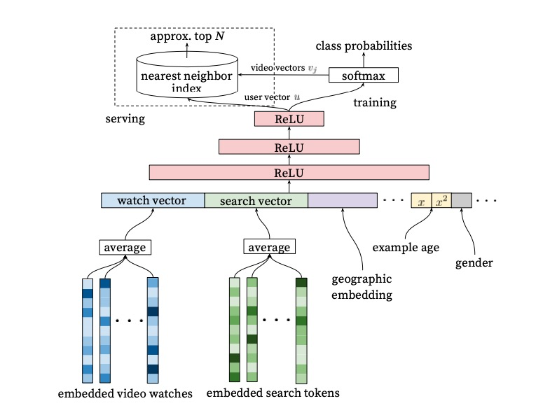
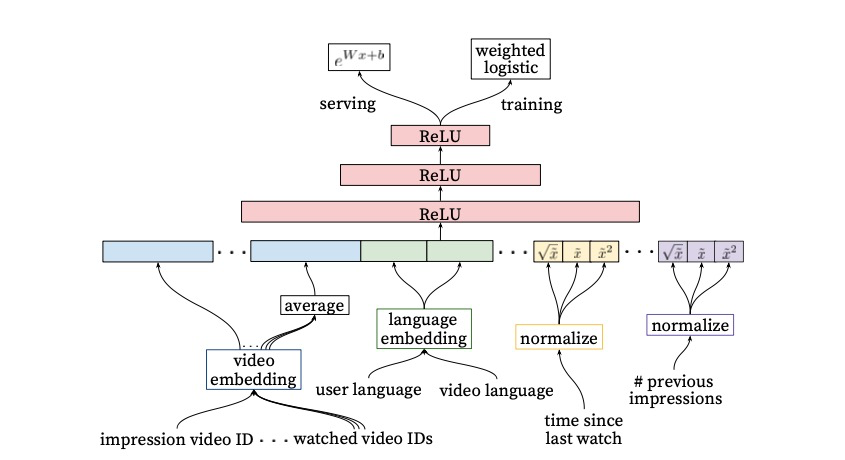

最近阅读了一篇2016年的推荐经典论文Deep Neural Network for YouTobe Recommendations, 网上也有关于这篇文章的许多讨论，特写此篇博客用以记录我对此模型的理解以及上线经历。
候选集生成
这部分和word2vec的做法非常相似，可以参考我的这篇博客，把召回过程看作是一个多分类问题，整个模型结构如下图所示 
可以看到最后一层是softmax层，然后在实际求解中使用NCE方法。最终可以通过基于LSH(局部哈希敏感)算法的ANN引擎做线上的召回。和word2vec不同的地方在多了两层非线性的隐藏层，全联接形式。 整个输入向量可以分为两大类：embedding向量和连续维度的数值。其中提出的example age这个特征比较特别，它的含义是上架时间到生成样本所经过的时长。所以会含有一个英文单词age，这就是年龄的含义。 在实际inference时，我们会给一个0值或者很小的负值。这样做的目的是让新鲜的视频有更多曝光的机会。有利于召回上传时间短，但是视频内容与用户兴趣更相关的新视频。 其实加入这个特征的原因是上架越早的视频，更有机会成为热门的视频，与大多数用户相关，因此在训练时加入该特征，有利于该特征的权重较大，而在线上召回时，将该特征的权重进行打压，则有利于其他相关性特征，因此对上传时间较短的新视频的召回有一定的帮助。
排序模型
排序模型使用的weighed LR模型，具体结构如下

weighed LR有两种实现方式
up-sampling方式 上采样通过增加正样本数量达到加权目的
magnify weight 这种方法就是在计算损失函数是引入权重。典型的如tensorflow提供的函数weighted_cross_entropy_with_logits
我们来复习一些概念
\[\begin{equation} \begin{split} y = \frac{1}{1 + e^{-w^Tx+ b}} \\ odds = e^{w^Tx+b} = \frac{p(y=1|x)}{p(y=0|x)} \\ p = \frac{odds}{odd + 1} \end{split} \end{equation}\]
odds 表示一件事情的发生比，是该事件发生和不发生的比率。logit就是对这个比率取对数。其中\(odds = e^{w^Tx+b} = \frac{p(y=1|x)}{p(y=0|x)}\) 在weighted logistic regression中，\(odds = \frac{\sum{T_i}}{N-k}\)，解释一下含义，假设总共的曝光次数为N，有观看的次数为k，我们把观看时长\(T_i\)看成权重，没有观看的曝光的权重是单位1 同样每一次曝光的观看时长的期望可以写做 \(E(T) = \frac{\sum T_i}{N}\), 这个式子也很好理解，从古典概型的角度去看。所以我们会有
\[ E(T)=\frac{\sum T_i}{N} = \frac{\frac{\sum T_i}{N-k}}{\frac{N}{N-k}} =\frac{odds}{\frac{N}{N-k}} \]
因为一般情况下k远小于N，所以\(E(T) \simeq odds\) 或者通过级数的角度理解
\[ odds = E(T)\frac{N}{N-k} = E(T)\frac{1}{1-p} \simeq E(T)*(1+p) \simeq E(T) \]
- tensorflow 小试牛刀 tensorflow是google推出的深度学习框架，实现了底层线性代数运算方法。我们使用tensorflow实现了召回和排序模型，一些核心代码如下
1 | class sort_model(tf.Module): |
1 | class recall_model(tf.Module): |
下面我简单汇总一下使用tensorflow过程中的注意点
variable_scope vs name_scope 作为一种图式计算引擎，应该使用命名空间来做变量隔离。name_scope只会决定对象属于哪个范围，并不会对对象的作用范围产生任何影响。通常name_scope配合tensorboard可视化使用 variable_scope 配合 get_variable 使用。可以共享变量
一些有用的tf函数 在使用tf时，始终要保证shape的运算准确性，有一些函数可以方便的改变tensor的shape。tf.sqeeze可以去除所有度量为1的维度，比如shape(1,4,1)变成shape(4,). tf.reduce_sum 对应axis的维度做sum操作。
模型部署 tf的模型部署(单机)并不复杂，比较绕的地方在它的配置文件，在进行模型热更新的时候，至少需要两步，第一步新模型load，第二步修改label的绑定。这样模型才会正式生效
小结
- youTubeDNN的召回模型需要类比word2vec，样本的生成同样考虑subsampling，优化手段也是negative sampling
- 排序模型是使用的weighted LR，计算出的odds 就是观看时长的期望。这样一个优化目标符合视频网站的业务要求
- 使用tensorflow serving作为模型的上线部署，注意其配置文件的修改顺序。